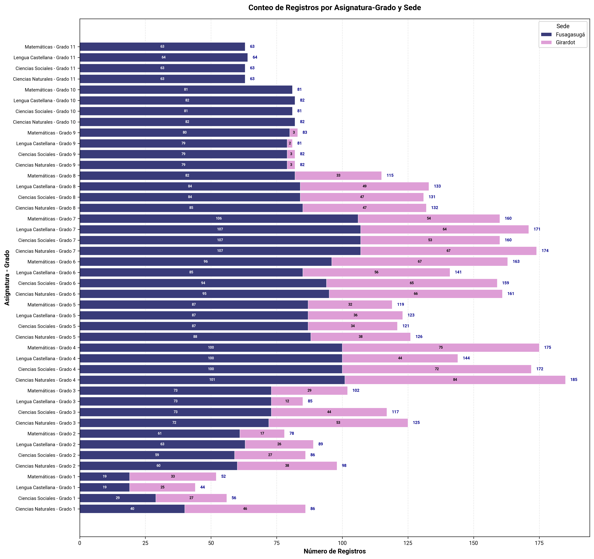
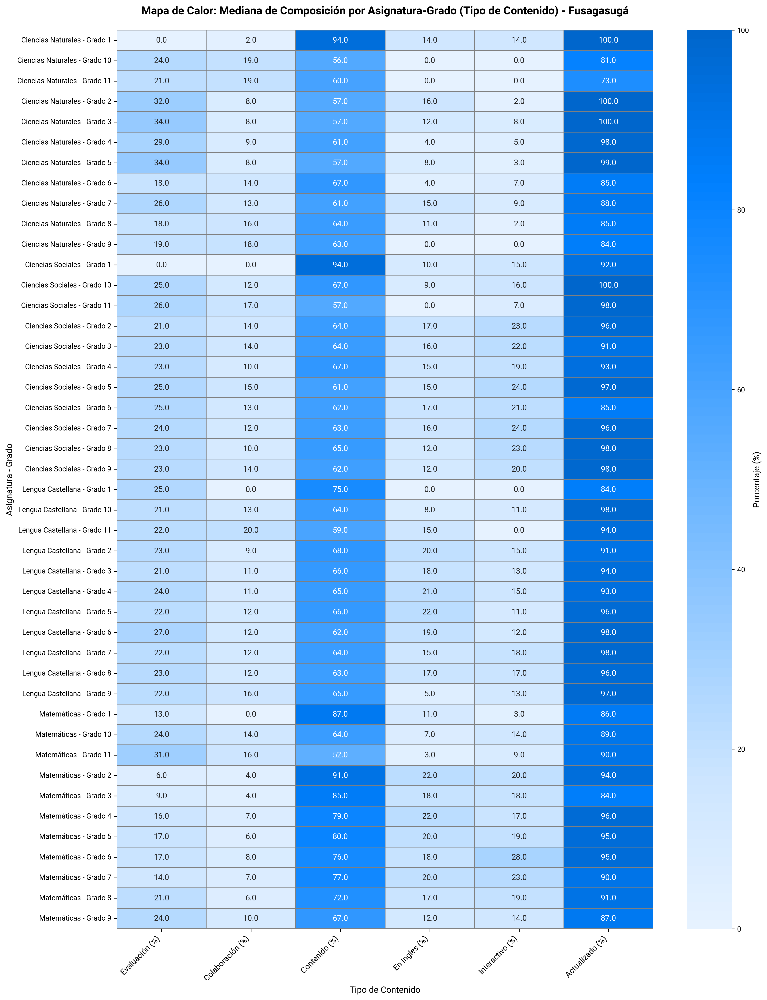
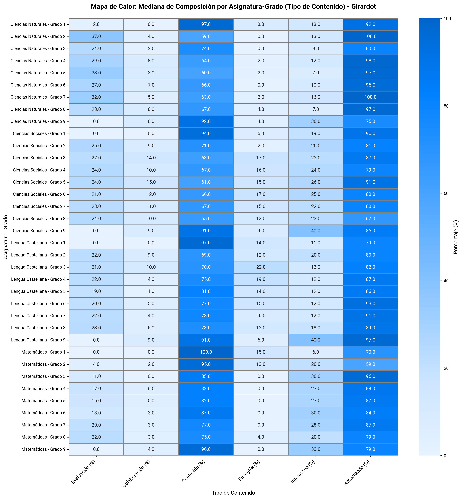
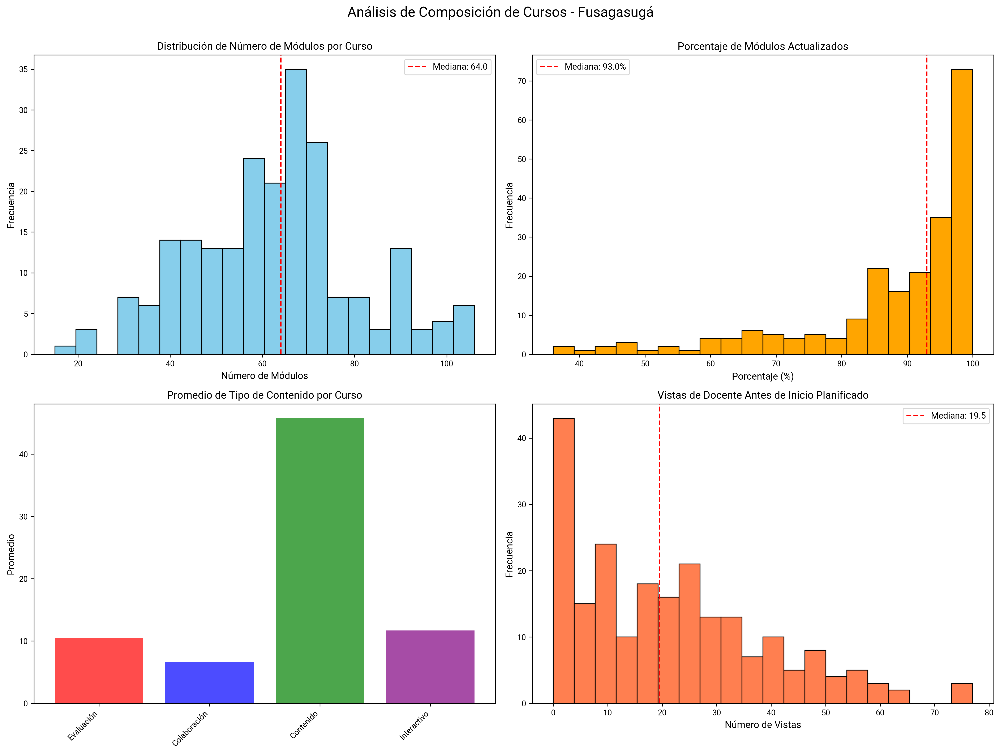
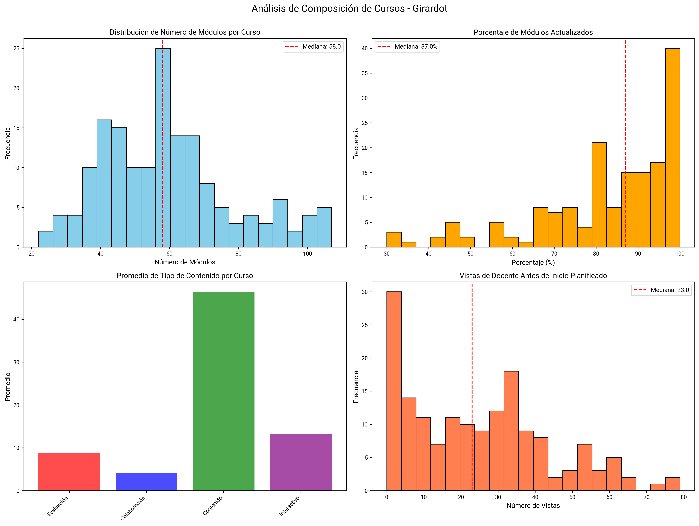
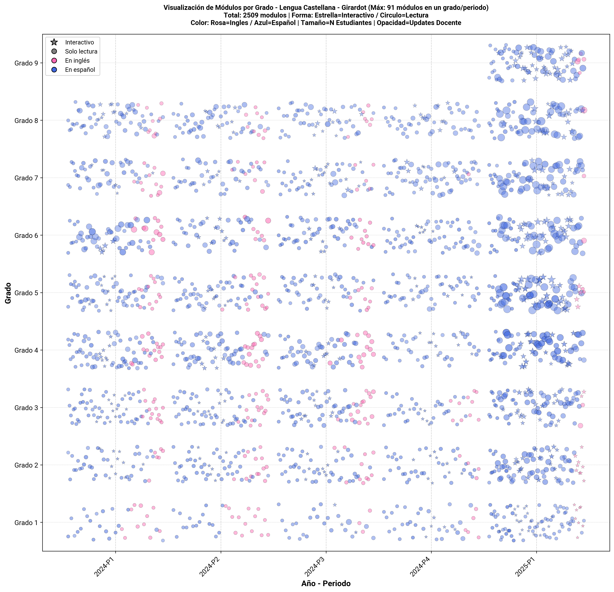
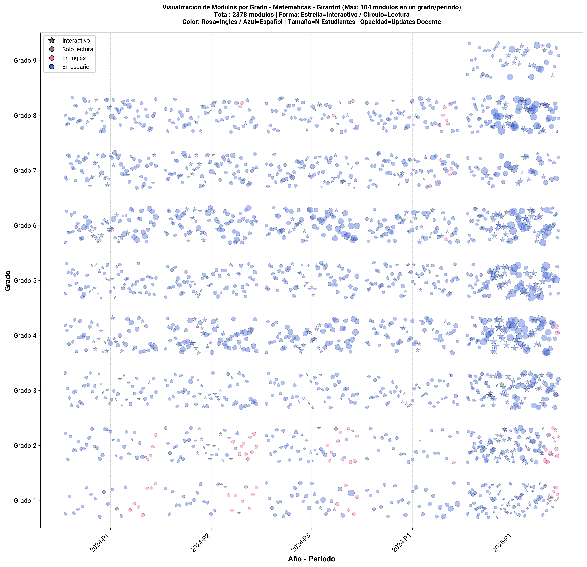
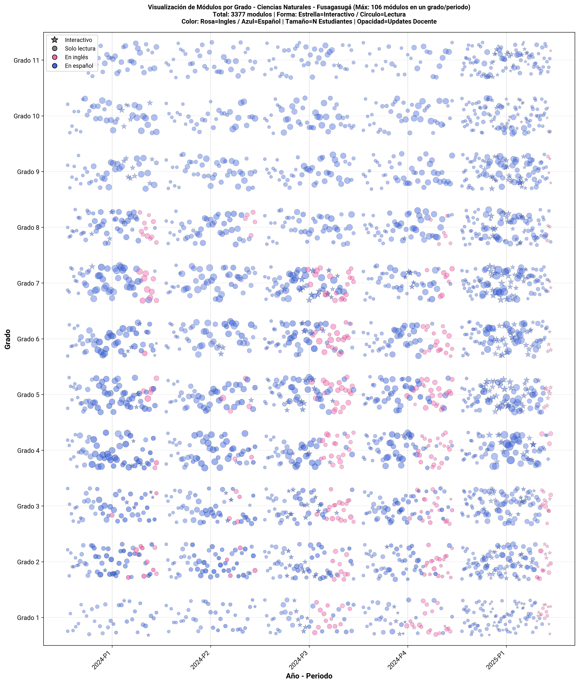
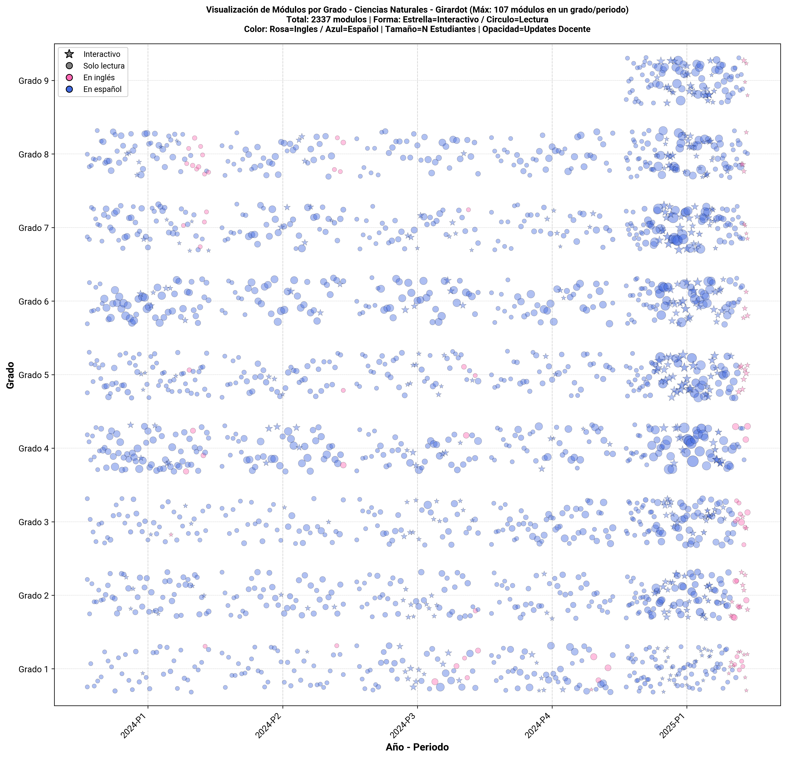
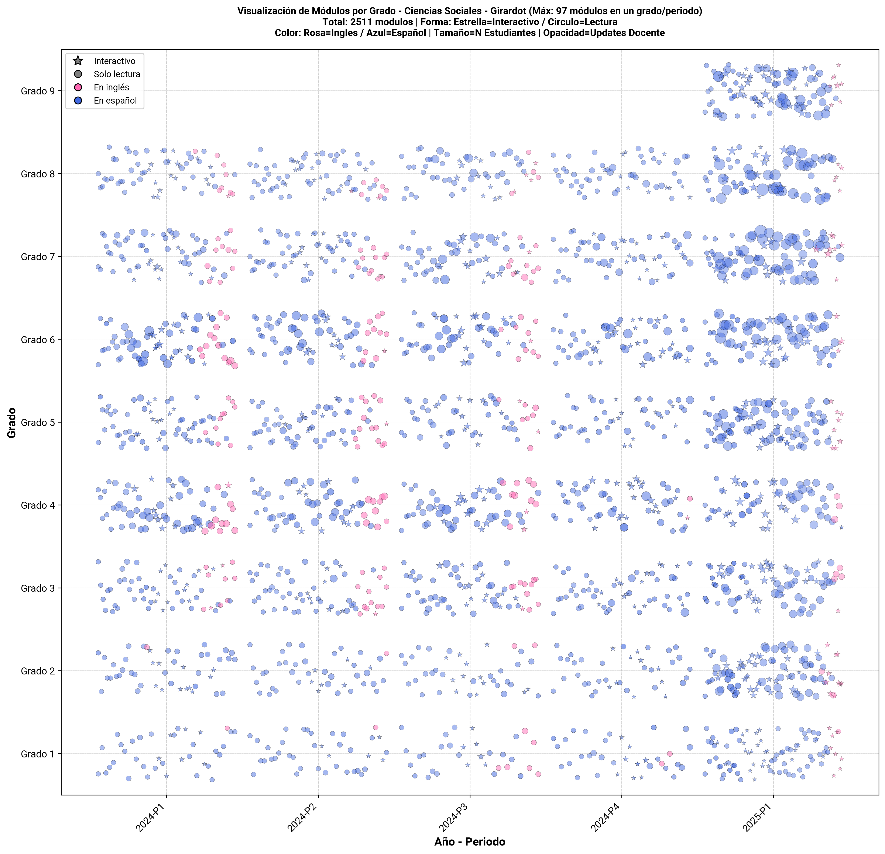

Análisis de Cursos en Moodle#
Resumen#
Este análisis explora la composición de los cursos en la plataforma Moodle, de las 4 asignaturas básicas (Lengua Castellana, Matemáticas, Ciencias Naturales, Ciencias Sociales) desde 2024-1 hasta 2025-1.
1. Conteo de Registros por Asignatura-Grado y Sede#
Visualización#

Descripción#
Este gráfico de barras apiladas muestra el volumen de registros (estudiante × período) para cada combinación de asignatura y grado, diferenciando por sede mediante colores.
Interpretación#
Formato de etiquetas:
Eje Y: Asignatura - Grado (ej: «Lengua Castellana - Grado 6»)
Segmentos de colores: Cada color representa una sede
Números en segmentos: Cantidad de registros de esa sede
Número al final de la barra: Total de registros (suma de todas las sedes)
Nota: Cada registro corresponde a un estudiante x periodo en la asignatura
2. Mapas de Calor: Composición de Cursos por Asignatura-Grado#
Visualizaciones#
Sede: Fusagasugá#

Sede: Girardot#

Descripción#
Los mapas de calor muestran la mediana de porcentajes para cada tipo de contenido en los cursos, por combinación de asignatura y grado.
Tipos de contenido analizados:
Evaluación (%): Porcentaje de módulos de evaluación
Colaboración (%): Porcentaje de actividades colaborativas
Contenido (%): Porcentaje de materiales informativos
En Inglés (%): Porcentaje de contenido en idioma inglés
Interactivo (%): Porcentaje de módulos que requieren interacción del estudiante
Actualizado (%): Porcentaje de módulos actualizados por docentes durante el período
Interpretación#
Métrica: Se usa la mediana para evitar el sesgo de valores extremos
Ejes:
Horizontal: Tipos de contenido
Vertical: Asignatura - Grado
Escala de colores:
🔵 Azul claro (0-20%): Muy bajo uso de este tipo de contenido
🔵 Azul medio (20-50%): Uso moderado
🔵 Azul fuerte (50-80%): Uso alto
🔵 Azul oscuro (>80%): Uso muy alto
Conclusiones#
En ambas sedes, el tipo de recurso más frecuente son los contenidos (archivos, lecturas, recursos estáticos).
Los tipos de contenido interactivo rara vez superan el 20 %, con excepción en Fusagasugá (hasta 28 %) y valores mínimos en Girardot
3. Análisis de Composición de Cursos#
Visualizaciones#
Sede: Fusagasugá#

Sede: Girardot#

1. Distribución de Número de Módulos por Curso (Superior Izquierda)#
Histograma mostrando cuántos módulos tiene cada curso típicamente
Línea roja indica la mediana
Interpretación:
Mediana 20-40 módulos
Mediana <10 módulos
Mediana >60 módulos
2. Porcentaje de Módulos Actualizados (Superior Derecha)#
Distribución del % de módulos actualizados por docentes
Interpretación:
>60%: Contenido mantenido activamente
30-60%: Actualización moderada
<30%: Contenido desactualizado
3. Promedio de Tipo de Contenido por Curso (Inferior Izquierda)#
Gráfico de barras comparando la cantidad promedio de cada tipo de contenido
Categorías:
🔴 Evaluación: Quizzes, exámenes
🔵 Colaboración: Foros
🟢 Contenido: Materiales de lectura
🟣 Interactivo: Actividades que requieren participación activa
4. Vistas de Docente Antes de Inicio Planificado (Inferior Derecha)#
Histograma de cuántas veces los docentes accedieron al curso antes de su inicio oficial
Interpretación:
>10 vistas
3-10 vistas
< 3 vistas
Conclusiones#
Fusagasugá:
Registra un mayor número de módulos por curso y un porcentaje de actualización más alto.
La distribución de tipos de contenido es más equilibrada, con presencia de actividades evaluativas e interactivas y la mayoría contenido de solo lectura.
Las vistas docentes previas al inicio son ligeramente menores.
Girardot:
Presenta un menor número de módulos por curso y un porcentaje de actualización.
Las vistas docentes antes del inicio son más frecuentes.
El contenido muestra una menor diversidad en comparación con Fusagasugá.
4. Visualización de Módulos por Grado#
Visualizaciones por Asignatura#
Lengua Castellana#
Fusagasugá:

Girardot: 
Matemáticas#
Fusagasugá:

Girardot: 
Ciencias Naturales#
Fusagasugá: 
Girardot: 
Ciencias Sociales#
Fusagasugá:

Girardot: 
Interpretación#
Las gráficas visualizan todos los módulos de una asignatura por periodo y año, mostrando múltiples características simultáneamente:
Eje X: Año-Período
Eje Y: Grado (1 a 11)
Forma del punto:
Estrella: Módulo interactivo
Círculo: Módulo de solo lectura
Color del punto:
Rosa: Contenido en inglés
Azul: Contenido en español
Tamaño del punto: Número de estudiantes únicos que accedieron al módulo
Punto grande = muchos estudiantes
Punto pequeño = pocos estudiantes
Opacidad del punto: Cantidad de actualizaciones del docente
Más opaco = más actualizaciones
Más transparente = pocas o ninguna actualización
Conclusiones#
Fusagasugá presenta mayor volumen, diversidad y continuidad en el uso de módulos, reflejando mayor uso de Moodle.
Girardot, en cambio, muestra un aumento reciente de actividad (2024-P4 a 2025-P1), asociado con la transición hacia Edukrea.
Fusagasugá se caracteriza por una alta densidad de módulos, mayor actualización docente, participación estudiantil más amplia y mayor presencia de contenidos interactivos y bilingües.
Girardot evidencia menor densidad y frecuencia de actualización, así como una participación más limitada, predominando los recursos tradicionales de lectura.